Навигация
· : Все обо всем : ·
Что такое Кара?
Кара - уникальный бафф в игре, который дается игроку при задевании врагов активной способностью потерянного предмета - клинка павшего бога (КПБ).
Чтобы нанести урон карой, нужно лишь наложить дебафф на врага (заморозка, горение и т.д.), и тогда врагу нанесется доп. урон и потратится 1 бафф кары.
Что значит разобрать врага?
Разобрать врага - значит уничтожить его эфирным оружием с префиксом U (например меч dU).
U префикс позволяет разбирать врага, до потери хп, т.е. преждевременно убить его. Это и значит "разобрать" врага.
Если враг разобрался, то вы сразу это поймете по частицам вокруг него.
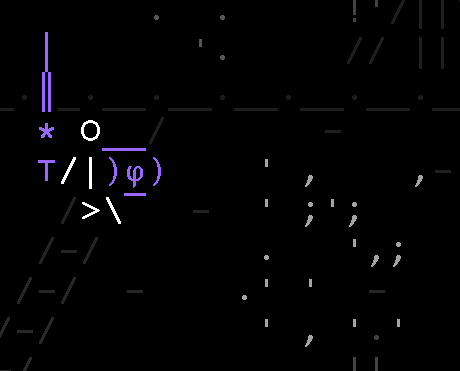Как получить награды за событие?
Вот, вы прошли событие, но награду никак забрать не можете. Это не баг.
Вам придется подождать окончания события. Только по его окончанию вы сможете получить свои награды.
А до того времени, выполняйте задания, даже если вы уже выполнили требуемый максимум. За них вы получите доп. ки.
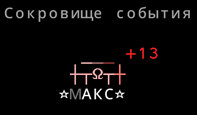Какое оружие выбрать?
Новички часто задаются вопросом, какое же оружие им использовать. Какое оружие в игре самое сильное?
На этот вопрос нет однозначного ответа, потому что каждое оружие хорошо по-своему, и смысла в других оружиях не было бы, если было бы одно универсальное.
Давайте рассмотрим основные оружия, которые я бы посоветовал использовать.
(Необязательно та руна, которая на картинке предмета, если она есть)
Оружия
-
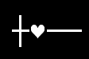
Рунный маленький меч
Наибольший урон по одинокой цели, имеющую элемент.
Быстрый. Имеет шанс нанести критический урон. Дополнительный урон по цели, имеющую противоположный элемент.
-
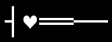
Рунный большой меч
Большой урон по области
Быстрый. Хорош против кучи мобов
-
Рунный жезл
Урон по области
Возможность атаковать издалека. Хорош против кучи мобов
-
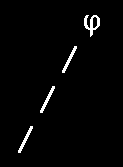
Рунный посох
Урон по области
Быстрый. Возможность атаковать издалека. Хорош против кучи мобов.
Дешевле зачаровывать, чем жезлы
Двуручный
Хотелось бы еще отметить такие оружия как: тяжелый молот, повторяющийся арбалет и тяжелый арбалет, но они немного ситуативны, поэтому их не включил сюда.
Что за руны и буквы над оружием?
Руны - весьма полезная вещь. При помощи них вы можете скрафтить оружие с определенными эффектами или с дополнительным уроном по определенным элементальным врагам.
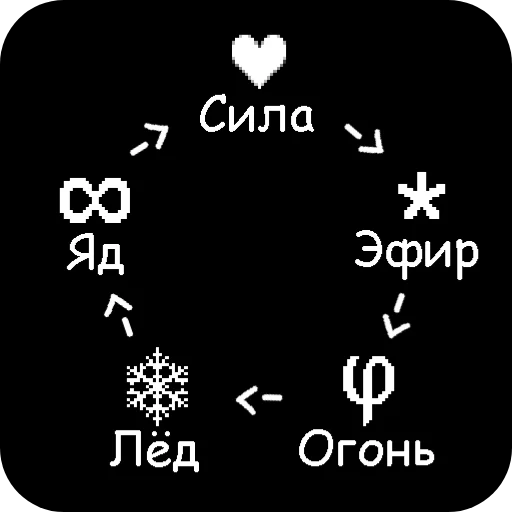Данная картинка иллюстрирует, какая руна сильнее какой. Логика очень проста, если враг имеет элемент яд, к примеру, то тогда вам нужно оружие с элементом лед, чтобы наносить больше урона.
Можно составить такую цепочку:
Яд -> Сила -> Эфир -> Огонь -> Лёд
Узнать элемент врага можно с помощью камня провидца. Но чтобы было легче, вот список элементов врагов по всем локациям:
-
Каменистое плато
- Скаут(11*+) - не имеет элемента
- Стражи(16*+) - не имеют элемента
- 1 фаза Дисангелос - не имеет элемента
- 2 фаза Дисангелос - переключается между всеми элементами
- 3 фаза Дисангелос - имеет все элементы сразу
-
Каньон дедвуд
Враги на этой локации не имеют элементов
-
Пещеры страха
Враги на этой локации имеют элемент: яд
-
Грибной лес
Враги на этой локации имеют элемент: сила
-
Призрачные залы
Враги на этой локации имеют элемент: эфир
-
Бурлящая шахта
Враги на этой локации имеют элемент: огонь
-
Ледяной хребет
Враги на этой локации имеют элемент: лед
-
Храм
Враги на этой локации имеют элемент: яд
Буквы над оружием
Буквы над оружием - особые префиксы оружия. Они говорят о том, какие модификации есть у оружия.
Например, префикс D меча силы означает что он имеет доп. урон против врагов элемента: эфир
Префикс dL меча силы означает что оружие с некоторым шансом может восстановить здоровье от атаки
Чтобы скрафтить оружие с доп. уроном по элементальным целям, нужно сначала расположить оружие, а затем руну, или оружие, содержащее руну
Чтобы скрафтить оружие с особым префиксом, нужно слева расположить руну, или оружие, содержащее руну, а справа оружие, с которым совмещаем.

Результат:

Какие различия ПК и мобильной версий?
| Мобильная | Пк |
|---|---|
| Бесплатная | Покупается 1 раз |
| Есть донат (внутриигровые покупки) | Нет доната (внутриигровых покупок) |
| Дорогие предметы | Дешевые предметы |
| Премиум нагрды дороже | Премиум награды дешевле |
| Пояс имеет физические кнопки и 6 мест | Пояс имеет бинд на клавиатуре и 10 мест |
| Можно пользоваться только встроенными файлами | Можно создавать свои собственные файлы и импортировать их |
| Имеются компромиссы с удобством использования | Лучше интерфейс и взаимодействие с мышкой и клавиатурой |
| Нет доступа к бета версии | Есть доступ к бета версии |
| Пиньята каждый день в игре с черепом при помощи рекламы | Пиньята бесплатно в игре с черепом каждые 3 дня |
| Пропуск открытия сундуков с помощью рекламы | Пропуск открытия сундуков с помощью ки |
| Трудное получение билетов | Легкое получение билетов |
| Проблемы с написанием кода в камне разума из за ограничения по символам | Ограничение по символам в камне разума присутствует, но можно писать код в файлах |
Какие максимальности есть в игре?
Максимальный уровень - 60ур.
Максимальное здоровье персонажа - 80хп
Максимальный уровень прокачки оружия - 10*
Максимальный уровень первого и второго зачарований оружия - +21
Максимальное количество сундуков за фарм - 400
Что такое реферальные коды?
Реферальный код - уникальный код, присваивающийся игроку. Обмениваясь этими кодами, люди могут получать раскрас на свое оружие, выбрав у скотти черепка вариант игры с реферальным кодом и выиграв у него игру.
-
Как активировать реферальный код?
Нужно зайти на локацию Призрачные врата, нажать на кнопку "Реферальный код" слева снизу и дойти до черепков
-
Как узнать свой реферальный код?
Свой код вы получите после того, как выполните еженедельный квест (которые будут выдаваться после прохождения Каменного плато на 5 белых звезд), вам выдадут квест "Реферальный Скотти" с вашим кодом.
-
Сколько можно вводить кодов?
На одно использование вашего кода вы можете использовать один чужой код. По этой причине обычно игроки кодами обмениваются.
-
Пишет "код не тот", хотя я вожу именно тот, который скинули!
Если вы уже вводили этот код ранее, то вы сможете ввести его повторно только через 5 других кодов.
-
У меня не появляется кнопка "Реферальный код", что делать?
Проверьте соединение с интернетом и перезапустите игру. Или если вы уже использовали чужой код, то чтобы продолжать вводить коды нужно чтобы кто-то ввел ваш код.
-
Что будет если я не успею выполнить квест "Реферальный Скотти"?
Квест из списка пропадет и появится снова после того как выполните еженедельный квест. Ваш реферальный код не изменится.
Как зарядить сломанный талисман?
Для того чтобы зарядить сломанный талисман, вам нужно:
- Зайти в локацию Призрачные залы
- Дойти до босса
- Убить первую фазу
- Дождаться атаки второй фазы(когда на вас ком катится)
- Взять в руки талисман и "поймать" эту атаку
- Поздравляем, один заряд вы получили!
Обратите внимание, что на локации должно быть достаточно звезд для того чтобы у Палласа была 2 фаза.
Не забудьте убить врагов, которые появляются после атаки на 2 фазе Палласа.
Как получить оффлайн фарм?
Возможность оффлайн фарма вы получите после того как пройдете Дисангелоса на 5*
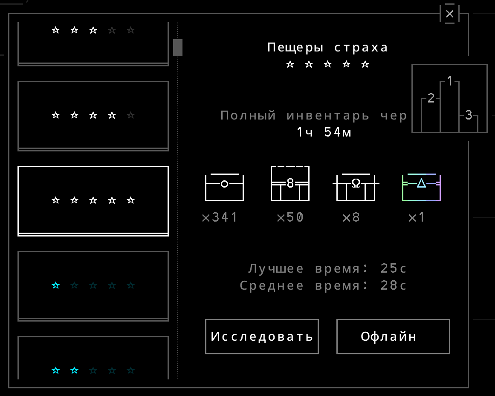Где получить ки кристаллы?
Ки кристаллы - очень ценная и редкая валюта в игре. Первая возможность получить их появляется после открытия лавки "горячий ключ" (после выполнения квеста "останки пяти")
Способы получения ки кристаллов:
- Ежедневно 1 бесплатный в магазине уулуа
- Еженедельные задания (5-10)
- Дельта сундуки (5-10, редко, шанс увеличивается со временем, минимум 5 дней, ожидайте выпадения каждые 1-2 недели)
- Из легенды "Выгорание" (1, можно получать бесконечно)
- События
- Лимитированное количество из книги научных исследований
- На телефоне можно купить за настоящие деньги.
Значки рядом с временем прохождения локации
Значки рядом с локации показывают, что будет происходить во время оффлайн фарма:
-
Желтая руна
Это значит, что вы будете тратить руну во время прохождения локации. Возможно появляется после частого использования огненного или эфирного талисманов. -
Красный крест
Это значит, что вы умрете во время прохождения локации, не успев дофармить ее до конца. Избежать это можно перепройдя уровень без потери здоровья, или полечиться на этом уровне много раз (даже если у вас фулл хп). Также можно варить зелье, которое содержит смолу перед оффлайн фармом, это поможет вам не умирать (понадобится автоварка и материалы для зелья будут тратиться по ходу оффлайн фарма)
Зелья
Зелья. Из чего крафтится определенное зелье, и что оно делает:
-
Камень + Камень
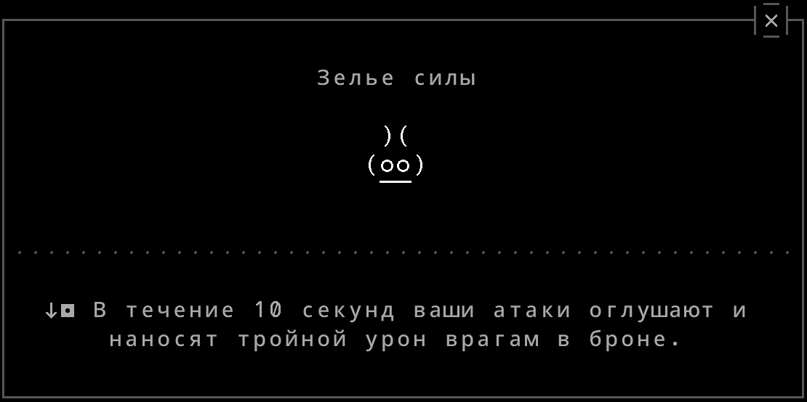 -
Камень + Дерево
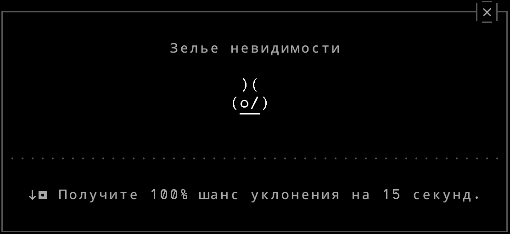 -
Камень + Бронза
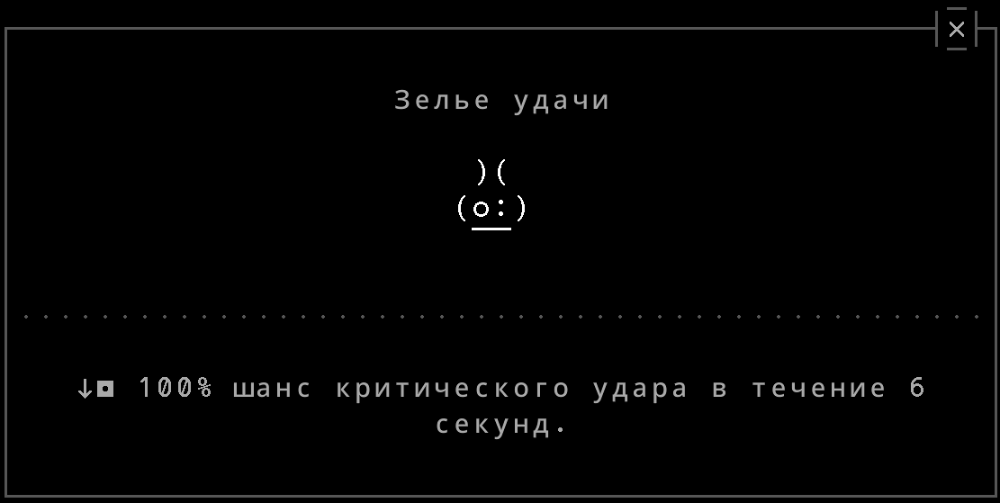 -
Камень + Смола
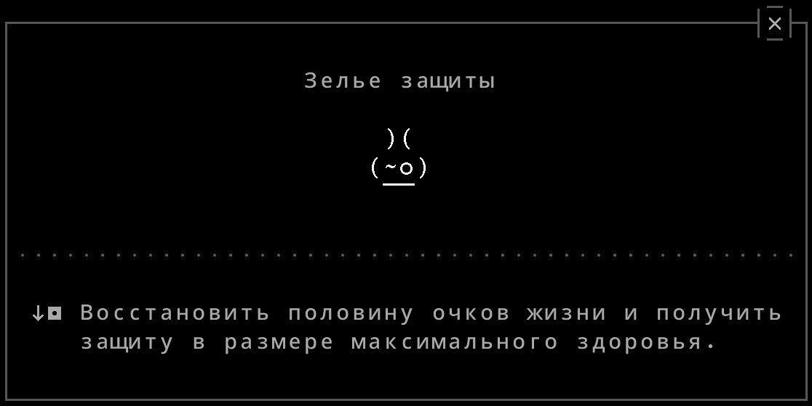 -
Древесина + Древесина
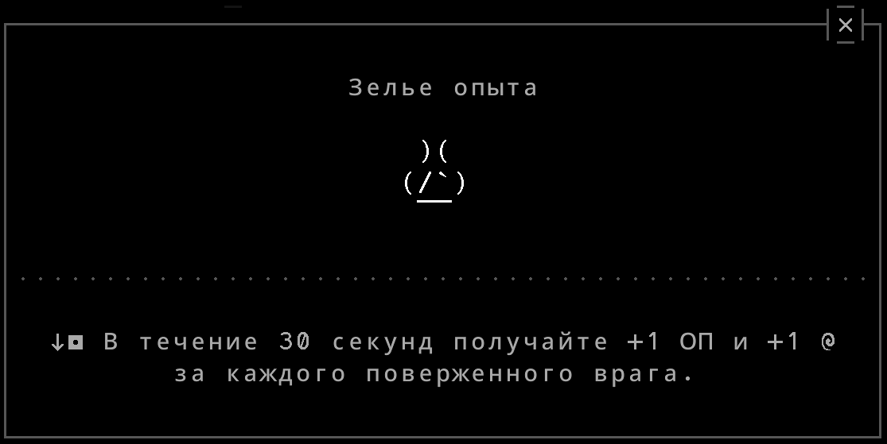 -
Древесина + Бронза
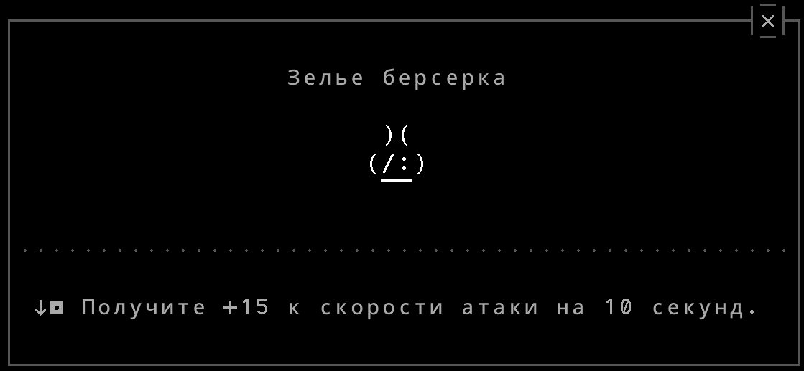 -
Древесина + Смола
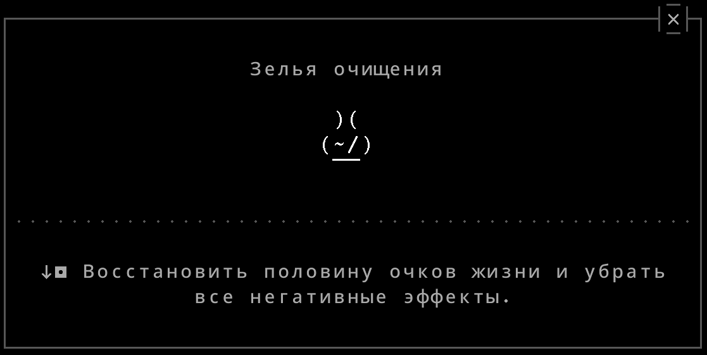 -
Бронза + Бронза
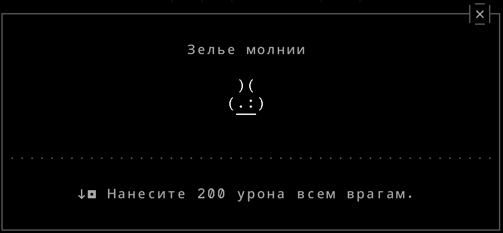 -
Бронза + Смола
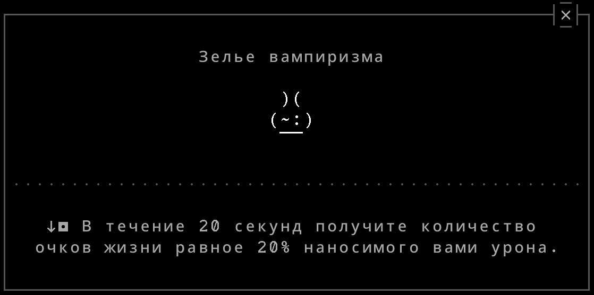 -
Смола + Смола
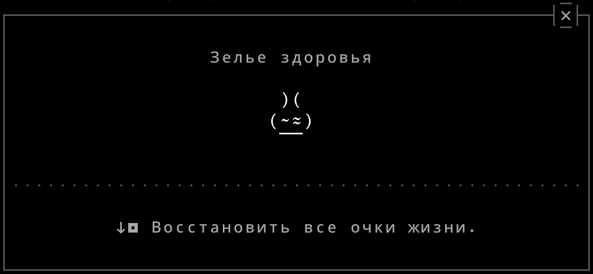
Книга рецептов
Способности жезлов
В игру добавили активные способности у жезлов. Для того чтобы их получить, вам нужен посох *10 и зачарование.
Чтобы сделать из обычного жезла жезл с активной способностью, нужно, подобно маске, зачаровать его на "секретное зачарование", которое позволит вам использовать активные способности у жезлов.
Чтобы использовать способность жезла, вам нужно держать его в руках и иметь необходимое количество брони ( указано в квадратных скобках )
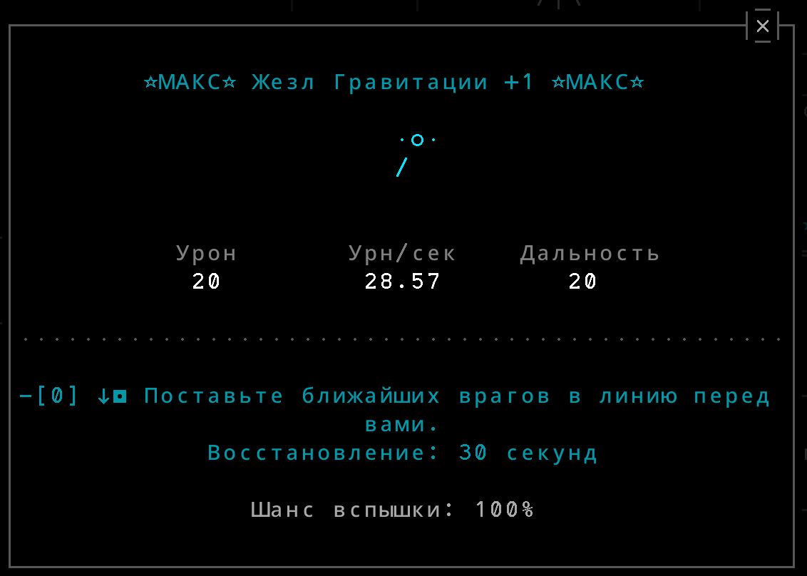Двойные зачарования.
Двойные зачарования - интересная механика в игре, позволяющая улучшить сразу 2 характеристики оружия вместо одной.
Для того чтобы сделать двойное зачарование вам понадобится одно зачарование минимум +16 и луноцвет.
Краткий экскурс по предметам, связанными с двойными зачарованиями:
-
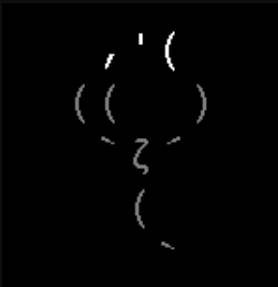
-
Бутон луноцвета.
Он изначально выпадает из яиц и имеет таймер. По окончании таймера или использовав кристальный порошок вы сможете превратить его в луноцвет. -
Луноцвет.
Можно купить или получить при цветении бутона луноцвета.
Можно сломать для того чтобы получить лепестки луноцвета или сковать с +16 зачарованием и выше для получения двойного зачарования. -
Лепесток луноцвета.
Можно получить из яйца, в событии, в магазине или при поломке луноцвета.
Используется для улучшения уровня второго зачарования. -
Кристальный порошок.
Можно получить из яйца, в событии, при поломке ки кристалла.
Используется для того чтобы ускорить цветение бутона луноцвета.
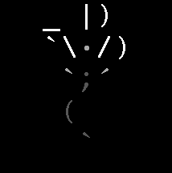
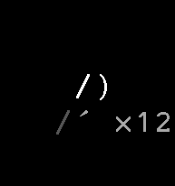
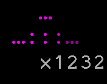
-
Руку Палласа на 1 фазе можно разобрать. Для этого можно экипировать например эфирный щит с модификатором разбора или сделать это при помощи эфирного талисмана.
-
На 2 фазе Дисангелос, пока еще не выбрал элемент, имеет в глазу камень, а соответственно слабость к не-рунным оружиям. Ударить мечом или арбалетом вы не сможете/не успеете, поэтому можно ударить тяжелым молотом или бердышем, но бердышем сделать это в разы сложнее.
Таким образом, вы нанесете примерно тройной урон от способностей. -
Например, вы проходите Пещеры Страха. Вы неудачно прошли 11* и у вас там теперь крест. При прохождении 14* этот крест автоматически уберется. Т.е., нужно пройти сложность, которая на 3* выше той, на которой вы умерли.
-
Если во время атаки Дисангелоса на 2 фазе вы держите в руках эфирный предмет и он атакует вас огненным элементом, то его рука с огненной руной будет разобрана.